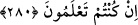

BORÇLUYA KOLAYLIK
280. Eğer (borçlu) darlık içinde ise, eli genişleyinceye kadar ona mühlet vermek
(gerekir) Eğer (gerçekleri) anlarsanız bunu sadakaya (veya zekâta) saymak sizin
için daha hayırlıdır.
Borçlu kimse, malının yok olması veya bozulması gibi sebeplerle zor durumda kalırsa
yapılması gereken, adamı bir kolaylığa çıkıncaya kadar beklemektir. Eğer bu durumda
olan borçlunuza borcunu bağışlarsanız daha hayırlı bir iş yapmış olursunuz. Alacağınızı
erteleyip mühlet vermeniz de hayırlıdır.
Rasûlullah (s.a.) şöyle buyurmuştur: “Alacağını tehir eden müslüman kişi için her
gün bir sadaka sevâbı vardır.”[260]
Yine Rasûlullah (s.a.): “Zor durumda olan borçlusuna mühlet veren veya borcunu
ona bağışlayan kimseyi Allah kıyamet gününün zorluğundan korur.”[261] buyurmuştur.
Borç vermek çok fazîletli bir iştir.
Ümâme el-Bâhilî rüyâsında, cennetin kapısında borcun on sekiz, sadakanın ise on
misliyle karşılık göreceğinin yazıldığını gördü: “Acaba niçin böyle?” diye içinden
geçirince şöyle cevap verildi: “Sadaka bazen ihtiyâcı olmayan kimsenin eline geçebilir.
Ama borç istemeye ancak ihtiyâcı olan gelir”
Rasûlullah (s.a.) şöyle buyurmuştur: “Üç şey vardır ki kıyâmet günü bunlara sâhip
olan mü’min, dilediği kapıdan cennete girer ve istediği hûri ile evlenir. Bunlar: Katili
afvetmek , her farz namazdan sonra İhlas sûresini on kez okumak ve borç isteyene
borç vermektir.”[262] Ebû Bekir Sıddîk (r.a.): “Bunların biri olsa olur mu ya
Rasûlallah” deyince Rasûl-i Ekrem Efendimiz: “Evet, bunların birisi de olsa
olur” buyurmuştur.
Üç durumda borç istenir:
1- Allah yolunda cihâd için gücü zayıfladığında,
2- Yokluk içerisinde ölen fakîr bir kimsenin kefenlendirilmesinde,
3- Bekârlığın fitnesinden kurtulmak için evlenmek istenildiğinde.
Bu üç durumda kişi Allah’a tevekkül ederek borç isteyebilir. Allah da ona borcunu
ödeyebileceği bir kapı açar.
Rasûlullah (s.a.) şöyle buyurmuştur: “İâde etmeye niyetli olarak borç alan kimseye
bir melek tâyîn olunur. Bu melek, borcunu ödeyinceye kadar onu korur ve ona duâ
eder.”[263] Selef-i sâlihîn, bu hadîs-i şerif sebebiyle ihtiyaçları olmadığı halde borç